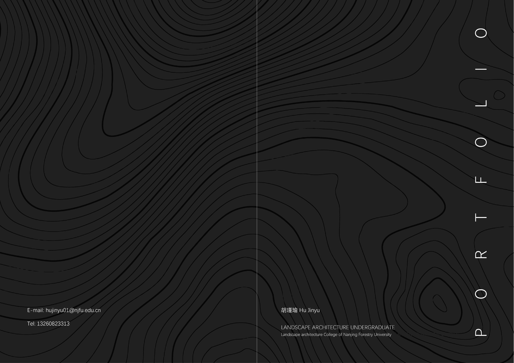
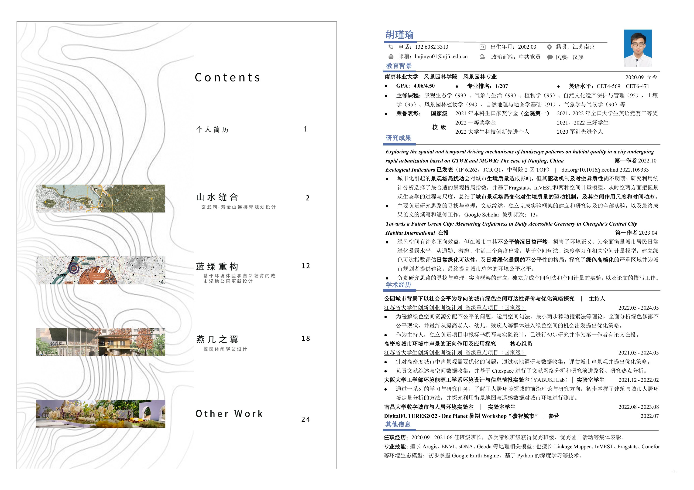

Design Portfolio
Landscape Design and Spatial Environmental Analysis.
Finalized undergraduate design portfolio rebuilt from A4 source pages into seamless A3 landscape spreads.
Complete Portfolio Boards
A complete sequence of full landscape spreads from cover and profile pages to studio works, architectural design, supplementary work, and certificates.
- Source
- A4 finalized file
- Display
- 16 seamless A3 spreads
- Format
- Landscape board viewer
- Sequence
- Cover to certificates




The spreads are generated from adjacent A4 pages without an inserted gutter between the left and right pages.